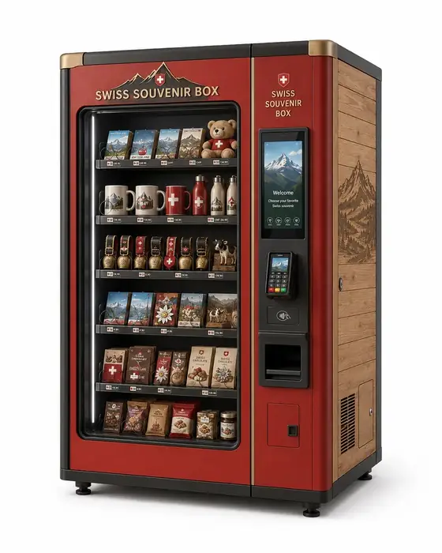
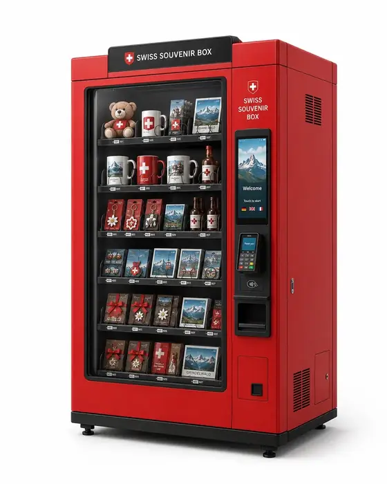

Entdecken
Standortbezogene Produkte und eine hochwertige Inszenierung schaffen Aufmerksamkeit – direkt im natürlichen Gästelauf.
Swiss Souvenir Box ist eine hochwertige, automatisierte Souvenirboutique für Hotels, Bergbahnen, Tourismusorganisationen und stark frequentierte Gästepunkte – regional kuratiert, flexibel integrierbar und ohne permanente Personalbindung.
* abhängig von der Zugänglichkeit des jeweiligen Standorts

Boutique statt Automat.
Ein zusätzlicher Verkaufspunkt dort, wo ein eigener Shop zu aufwendig wäre – mit einer Gestaltung, die zum Ort passt.
Souvenirverkauf scheitert oft nicht an der Nachfrage, sondern an Öffnungszeiten, Personalaufwand und fehlender Fläche. Die Swiss Souvenir Box bündelt Verkauf, Gestaltung und lokale Identität in einem kompakten Format.
Standortbezogene Produkte und eine hochwertige Inszenierung schaffen Aufmerksamkeit – direkt im natürlichen Gästelauf.
Ein kuratiertes Sortiment statt überladener Auswahl. Lokale Editionen, klare Produktinformationen und QR-Stories geben Orientierung.
Bargeldlos und intuitiv. Das Konzept ist auf schnelle, internationale Nutzung ohne dauerhaft besetzten Verkaufspunkt ausgelegt.
Eine echte Erinnerung, ein Geschenk oder ein regionales Produkt – direkt dort verfügbar, wo der Kaufimpuls entsteht.
Früh am Morgen, nach Ladenschluss oder zwischen zwei Programmpunkten: Die Box erweitert den Verkauf über klassische Öffnungszeiten hinaus. Für den Standort entsteht ein zusätzlicher Service- und Verkaufspunkt, ohne einen eigenen Souvenirshop aufbauen zu müssen.
Das Sortiment verbindet bewährte Schweizer Souvenir-Kategorien mit Produkten, die zum konkreten Ort passen. Im Pilot stehen kompakte, robuste und gut lagerbare Artikel im Vordergrund.
Hochwertige Metall-, Emaille- und Reliefvarianten mit regionalen Motiven.
Schlüsselanhänger, Gepäckanhänger und kleine, unkomplizierte Reisebegleiter.
Kleine Schweizer Klassiker und regionale Designobjekte mit Geschenkcharakter.
Fotografie, Illustration und lokale Kunst in automatengeeigneten Formaten.
Socken, Caps, Stoffbeutel, Kinder-Sets und kuratierte Geschenkboxen.
Optional ausgewählte, lang haltbare Produkte – nur dort, wo Technik und Betrieb sinnvoll passen.
Die Box kann lokale Händler, kleine Manufakturen, Künstler, Museen oder standorteigene Produkte einbinden. So wird aus einer Standardlösung ein sichtbarer Teil des Ortes.
Die Aufgaben werden klar geteilt. Der Standort bringt Fläche, Frequenz und lokales Wissen ein; Swiss Souvenir Box organisiert das System rund um Technik, Sortiment und Betrieb.
Souvenirs auch ausserhalb klassischer Öffnungszeiten verfügbar.
Je nach Modell Umsatzbeteiligung, Miete oder individuell vereinbarte Zusammenarbeit.
Regionale Editionen und Co-Branding machen den Standort sichtbar.
Verkäufe und Produktperformance werden transparent und optimierbar.
Die Grundidee: Bedienlogik und technische Basis bleiben möglichst einheitlich. Aussenwirkung, Produktbelegung und Co-Branding werden an Region und Standort angepasst.


Die konkrete Geräteausführung wird auf verfügbare Fläche, Sortiment und Frequenz abgestimmt.
Die Standortprüfung klärt Anschluss, Zugang, Indoor-/Outdoor-Eignung und technische Anforderungen.
Produkte werden vorab vermessen und die Belegung auf sichere, zuverlässige Ausgabe abgestimmt.
Koffer, Holz, moderner Premium-Look oder Co-Branding – die Hülle folgt dem Standort.
Gezeigte Geräte sind Konzeptvisualisierungen. Finale Ausführung, Technik, Abmessungen und Beklebung werden für den jeweiligen Pilotstandort definiert.
Für den Pilot wählen wir Standorte nicht allein nach Besucherzahlen aus. Entscheidend sind Sichtbarkeit, natürlicher Laufweg, Zielgruppe, Zugang, Sortiment und ein Betrieb, der im Alltag einfach funktioniert.
Standort vorschlagenGäste, Frequenz, Fläche und Ziele verstehen.
Platzierung, Sichtachse, Zugang, Strom, Branding und lokale Produkte klären.
Gerät, Sortiment, Aufgabenverteilung und Kooperationsmodell passend zum Standort definieren.
Verkäufe, Top-/Flop-Produkte, Nachfüllaufwand und technische Abläufe datenbasiert verbessern.
Wir prüfen gemeinsam, ob Fläche, Gästefrequenz und Standortlogik für einen Pilotbetrieb passen – unverbindlich und ohne vorgefertigtes Standardpaket.